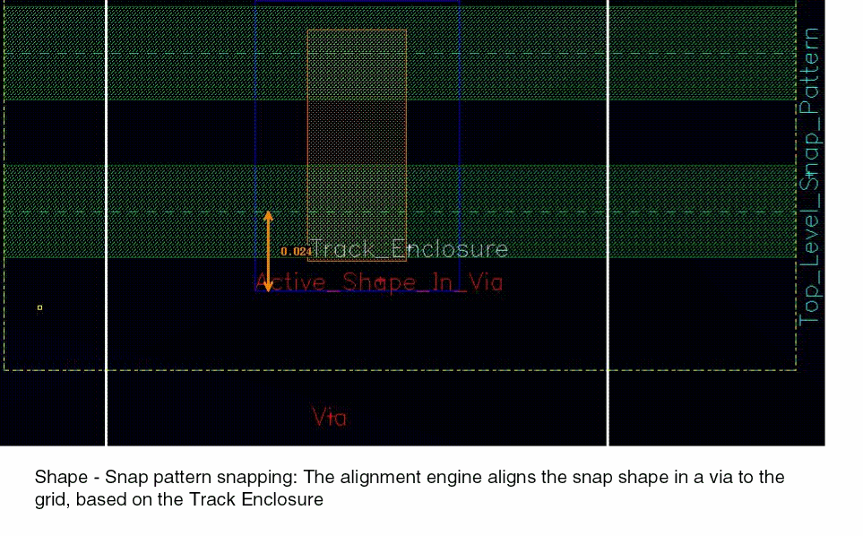

15
FinFET Support in Layout Editor
This chapter describes enhancements made to the layout editor to support FinFET devices. These enhancements include mechanisms to let you display the snap pattern grid in the layout canvas and automatically snap design objects to that grid.
This chapter contains the following topics:
- Snapping Objects to Local Snap Pattern Shapes
- Snapping Objects to Global Snap Pattern Grid
- Controlling the Display of Snap Patterns in Palette
- Modes for Object Placement
- Create Custom Placement Area
- Snapping for singleTrackCenter Snap Mode
Snapping Objects to Local Snap Pattern Shapes
Virtuoso has been enhanced in a way that layout engineers working on FinFET processes improve their productivity. A new snap pattern has been defined to capture layers that have a grid-like nature and new constraints have been defined to capture a new class of width and spacing rules for FinFET processes. For more information, see
The layout editor has been enhanced with visualization of the fin grids made inherent in FinFET technology, as well as automated snapping of shapes to the fin grid.
Snapping Objects to Snap Patterns
The high-level steps that a layout designer needs to follow for snapping objects to snap patterns are listed below:
- Create the snap pattern definition for the fin boundary in the ASCII technology file.
-
Specify the fin pitch (
step), fin width (trackWidth), direction (stepDirection), distance of the first fin center line from the lower edge (offset), and type (type) of fin - local or global. -
Specify the name of the layer, typically the Active layer, on which objects will snap to the fin grid (
snappingLayers) and the required fin enclosures from the center line (enclosures). There can be multiple snapping layers (layer) in the snap pattern definition. Each layer can optionally have multiple purposes (purposes) and enclosure values (enclosures). - Draw the fin boundary in the layout editor.
- Move a Pcell (including modgen Pcells), a via, an Active shape, or an instance over the fin boundary. These objects are snapped automatically to the fin grid by the layout editor.
Placing Objects Inside the Fin Boundary
The layout editor provides rapid placement of shapes, Pcells, instances, and vias in a fin boundary using a shape snapping algorithm. This ensures a correct-by-construction layout on the fin grid. Automatic alignment is achieved by an alignment engine, which contains the alignment semantics. The layout editor commands that are responsible for creating and moving Pcells, instances, and vias in a layout make use of the alignment engine to ensure placement correctness. The alignment engine accepts a set of shapes, and based on their overlaps with fin boundaries in the design, places them appropriately. The automatic placement requirements and their results are classified as following:
-
When a snap pattern shape or a Pcell, instance, via or fig group containing a snap pattern shape (the free figure) overlaps another snap pattern shape or a Pcell, instance, via, fig group containing a snap pattern shape, (the fixed figures), on the same LPP, then the alignment engine tries to align the snap pattern tracks and in the process determines the transformation that is applied to the free figure, such that the closest tracks of the overlapping pair are aligned.
The above figure shows the result of snap pattern shape pair alignment. No modification of the Pcell code is necessary to enable snapping of Pcell instances to the fin grid, since the snapping is done based on the existing fin boundary shape in the Pcell. -
A snap pattern definition specifies a list of LPPs. Shapes on these LPPs should snap to the snap pattern grid. When a shape on such a layer, or a Pcell, instance, via, fig group containing a shape overlaps a matching snap pattern shape then the engine computes the transformation that would be required to place the shape as defined by the applicable track enclosure.
The above figure shows the result of shape to snap pattern alignment for a via that contains this shape. No change to the via is needed to enable snapping of substrate contacts to the fin grid because the snapping is done based on the existing shape on the Active layer in the via master.
Controlling the Display of Snap Patterns
The layout editor has been enhanced to visualize the fin grid or the full fin shapes inside fin boundaries. The snap pattern display lets you switch between full fin detail display, which is used to debug fin-alignment related DRC violations, and high-level fin boundary display which is used to focus on wiring and placement without being distracted by fin shapes.
You can display the boundary, the tracks, or both of them for snap patterns.
-
Choose Options – Display.
The Display Options Form opens.

-
Select one of the following from the Snap Pattern Display list:
- Full: Displays the snap pattern (SP) boundary, tracks, fins, and width spacing patterns periods.
- Tracks: Displays the snap pattern boundary and tracks.
- Boundary: Displays only the snap pattern boundary.
- Periods: Displays only the width spacing pattern periods.
-
Periods and Tracks: Displays width spacing pattern periods and tracks.
-
Click OK.You can use the new leCycleSnapPatternDisplay SKILL function to cycle through the different snap pattern display types. You set the default value using the new snapPatternDrawingStyle environment variable.
Turning On Snap Pattern Snapping
To turn on Snap Pattern Snapping in the Layout Editor Options Form, do the following:
- Choose Options – Editor.
-
In the Layout Editor Options Form, click to turn on the Snap Pattern Snapping option and click OK.
You can also set the snapPatternSnapping variable in your .cdsenv file, to turn the Snap Pattern Snapping option on at startup.
layout snapPatternSnapping boolean t
Snapping Objects
This section describes how objects are snapped to snap pattern shapes.
Snap Pattern Shape to Snap Pattern Shape Snapping
Two snap pattern shapes drawn on the same LPP snap to each other. Assume a FinFET process where snap pattern shapes are used to draw fin boundaries. If two Pcell instances containing fin boundaries are placed close to each other, such that their fin boundaries overlap, then Virtuoso will automatically align the fins of these snap patterns, as shown in the figure below.
When an instance containing multiple snap pattern shapes overlaps a snap pattern shape, then the instance is snapped based on only one of the snap pattern shapes. If the instance partially overlaps the snap pattern shape, one of the overlapping snap patterns is used for snapping.
P&R Boundary Snapping
When you create a P&R boundary with the Create Method as From Selected Set and the constraint allowedPRBoundaryDimensions constraint.
Instance Snapping
When an instance overlaps a snap pattern shape and the master does not contain a snap pattern shape on the same LPP, then the instance is snapped based on its shapes (assuming it contains a shape on an LPP that snaps to the snap pattern shape).
For example, consider a Pcell instance that does not contain a snap pattern, but it contains a shape on the Active layer. If this Pcell instance is moved over a snap pattern shape that applies to the Active layer, then the instance is snapped to the grid based on the shape on Active layer using the snap pattern definitions enclosures attribute.
If there are multiple matching shapes, the snapping is done based on the first LPP union bbox that is found, where the relevant edge (lower for vertical snapping, left for horizontal snapping) overlaps the snap pattern shape.
If the snap pattern shape applies to shapes on multiple LPPs and the instance master contains shapes on several such LPPs, the snapping algorithm does snapping based on any one of the LPPs.
If the instance overlaps multiple snap pattern shapes that are Active, then the algorithm does snapping based on just one snap pattern shape.
Snapping Instances in Modgens
A modgen comprises multiple Pcell instances in the form of a complex, structured array. The layout editor automatically snaps the Pcells in modgens to the snap pattern. The entire modgen block is, therefore, snapped to the top-level snap pattern shape.
Shape Snapping
Shapes that overlap a snap pattern shape after a copy or move snap to the grid.
For example, consider a snap pattern shape that applies to the Active layer and it is moved over a snap pattern shape. The shape is snapped to the grid based on the snap pattern definitions enclosures attribute.
A shape may overlap multiple snap pattern shapes and more than one of those may apply to it. In this case, the snapping algorithm does snapping based on one snap pattern shape.
When you are creating a rectangle and the rectOnSnapPatternGrid environment variable is enabled, a DRC correct rectangle is created.
Via Snapping
Custom layout designs have a stdVia, cdsViaDevice, cdsGenVia, and customVia. Except for customVias, none of the vias insert a snap pattern shape into the via subMaster. Therefore, vias are snapped based on the shapes they contain, instead of a snap pattern.
Also, when a via in a via stack is snapped to a snap pattern shape, the entire via stack is snapped. A via stack is snapped as a group.
Via and via stacks that overlap a matching snap pattern shape after a copy, move, or create operation are snapped to the grid.
For example, consider a FinFET process where snap pattern shapes are used for fin boundaries. When a substrate contact containing an Active shape is placed on a fin boundary, it is automatically aligned to the fin grid based on the enclosures of the snap pattern shape. The figure below contains a via with a plate layer on “Active/drawing”. When the via is moved over a snap pattern shape that applies to all Active shapes, the via is automatically snapped to the fin grid based on the enclosures of the snap pattern.
When a snapPatternDef does not have any snapPurposes, it applies to all shapes on the snapLayer.
If the snap pattern applies to shapes on multiple LPPs and the via master contains shapes on several such LPPs, the snapping algorithm does snapping based on one of the LPPs.
If the via overlaps multiple snap pattern shapes that are Active, then the snapping algorithm does snapping based on one snap pattern shape.
Snapping Objects and Shapes as Groups
The following objects in a cellview are snapped as groups:
- Members of a fig group.
-
A chain of abutted MOS devices. If the chain is moved in such a way that snapPattern snapping is triggered after the move, all the devices on it are snapped together. This ensures that the abutment chain remains aligned.
-
Members of a selected set, only if the selected set has a shape.For Move and Copy commands, if the selected set has a shape, then the entire selected set is snapped as a group. If the selected set has less than 25 figures, the representative figure is the nearest snappable shape in the hierarchy inside the selected set. However, if the selected set has more than 25 figures, the representative figure is the nearest top-level figure in the selected set; the heirarchy analysis is not done.
- Vias in a via stack.
Track Group Support
The layout editor has been enhanced to support track groups available in snapPatternDefs.
When a snapPatternDef has track groups, tracks are combined in groups. Within each track group, the existing step is used as the track space. The period of the snapPatternDef is computed from the group spacings and the number of tracks in each group.
Snap pattern shapes of the snapPatternDef snap to their period lines.
The shape snapping for track groups is supported both for global and local snap pattern definitions.
For snap pattern to shape snapping, the shape is snapped by having the lower or left edge of the shape enclose a track by the trackEnclosure value. The shape is snapped to the nearest track. To move a snapped shape from one track group to another, move the pointer by at least half the track group spacing.
The shape snapping to snap patterns with track groups is depicted in the figure below.
For snap pattern to snap pattern snapping, the computed period is used. The lower-left edge of the moving snap pattern is snapped to the closest period line of the target snap pattern. The track groups in snap pattern to shape snapping are depicted in the figure below.
Snapping of Instances in Detail Mode
Special behavior is needed when snapping instances containing snap patterns with track groups. Non-uniform snap patterns have a lower precedence than the uniform snap patterns. The snapping behavior is described below:
- If an instance has both uniform and non-uniform snap patterns, only the uniform snap pattern is used for snapping.
- If an instance contains only non-uniform snap patterns, snapping is done to period lines.
-
If there are no non-uniform snap patterns, there is no change in snapping behavior.Instance snapping based on snap patterns will usually be more accurate than shape-based snapping. As a result, if a snap pattern shape is found, shape snapping will be disabled for that direction. In this case, shape snapping will not be performed even if snapping is not possible for the snap pattern shape.
Snapping Objects to Global Snap Pattern Grid
The layout editor has been enhanced to display a uniform fin grid over the entire design window. This has been enabled by adding a global snap pattern grid to the design. You can create a global snap pattern grid by specifying the value global in the type constraint of the snap pattern definition, as shown below.
snapPatternDefs(
(GFG ("CellBoundary" "global")
'offset 0.024
'type "global"
'step 0.048
'stepDirection "vertical"
...
The type constraint can have the value global or local. For more information, see
A local snap pattern definition is drawn using a snap pattern shape in the layout. A global snap pattern definition can be activated through either a constraint (snapGridVertical or snapGridHorizontal), or by drawing a corresponding snap pattern shape.
Controlling the Display of Global Grid
You can also enable global grid display using the snapGridVertical and snapGridHorizontal constraints. The constraint value is the name of the global snapPatternDef and the direction the same as is specified in that snapPatternDef.
In the example below, the constraint value is GFG, which is the name of the global, vertical snapPatternDef shown on the previous page.
spacings(
snapGridVertical("GFG")
);spacings
Anchoring the Global Grid
The global grid is anchored in the following order of priority:
You can also enable or disable the global grid anchoring using the following environment variable:
graphic snapPatternGlobalGridAnchoring boolean nil
When the global grid anchoring is disabled, the global grid is anchored to the origin axis.
A few examples of global grid anchoring are shown below:
-
Anchoring by shape on global snapPatternDef LPP: The vertical grid is anchored to the lower edge of the drawn shape. In the example below, an offset of 24nm is shown.

-
Anchoring by PR boundary: If no shape is drawn on global grid LPP, then Virtuoso looks for a PR boundary. If it is found, then the global grid is anchored to the lower edge of the PR boundary.
By default, the PR boundary snaps to the least common multiple of the grid values in the X and Y directions. You can use the environment variables, boundarySnapXGridsand boundarySnapYGrids, to override the default behavior and snap the PR boundary to the specified grids in X and Y directions, respectively.
When the creation method for PR boundary is Rectangle, both the edges on the X and Y axis are snapped. However, when the creation method for PR boundary is Polygon, all points are snapped. When the creation method for PR boundary is From Selected Set and the Rectilinear option is not selected, the bounding box is snapped.
During creation, only the outer edges of the rectilinear PR boundary snaps to the grids. During stretch, all the selected edges, inner or outer, of the rectilinear PR boundary snap to the grid.
For editing command, the PR boundary snaps with the snap boundary as reference, ifdbGetGlobalGridOffsetReferenceType(cv)is specified asboundary. If thedrdEditSmartSnapAllowedWidthSnapenvironment variable is specified and the placement grid is present in the design, these settings are prioritized for snapping. -
Anchoring by Origin Axis: If a PR boundary, snap boundary, or a drawn shape on LPP is not found, then the global grid is anchored to the origin axis.
Global snapping is done similar to local snapping. For more information, see Snapping Objects.
Commands Supporting Snap Pattern Snapping
Snap pattern snapping is supported in Create Rectangle, Create Instance, Create Via, Create Wire, Copy, Move, Stretch, Flip, Rotate, Yank and Paste, and Repeat Copy commands.
You can enable the environment variable, , to snap, resize, and color all pathsegs and vias in the selection set during the Move and Copy commands. The pathsegs are snapped to the track by maintaining the relative spacing between them. The connectivity of pathsegs and vias is also maintained.
Controlling the Display of Snap Patterns in Palette
You can control the visibility of snap patterns (local and global grids) through the Grids panel of the Palette assistant. The grid drawing style is controlled through the Snap Pattern Display field in the Display Options Form. For more information on the Snap Pattern Display field, see Controlling the Display of Snap Patterns.
The selections that you make in the Layers, Objects, and Grids panels of the Palette assistant control the visibility of the shape boundary and grid on the canvas. When the grid visibility is on, the shape boundary and grid is displayed irrespective of the LPP and shape visibility settings.
The following table lists the options selected in the Palette assistant and the results displayed on the canvas.
| LPP Visibility (Layers Panel) | Shape Visibility (Object Panel) | Grid Visibility (Grids Panel) | Display on Canvas |
|---|---|---|---|
Modes for Object Placement
In a FinFET based chip, all instances should be aligned to a fin grid, either to several independent local grids or to a global grid.
For the placement of Pcells and small instances, placement is done by searching the instance master for fin grids. If no fin grids are found, snapping shapes are searched. This functionality is referred to as Detail Mode Placement. For more information, see Instance Snapping. Detail Mode Placement is suitable only for small blocks.
For the placement of large blocks, it is not feasible to search the instance master for fin grids or snapping shapes. Instead, it is recommended that you use Abstract Mode Placement. In Abstract Mode Placement, an instance snaps to a global snap pattern grid using its snapBoundary or PRBoundary. If a snapBoundary or PRBoundary is not found, then the instance’s origin axis is used as the reference point for placement.
Abstract Mode Placement allows fast placement of large layout blocks. For more information, see Abstract Mode Placement.
There may be a situation when both Detail Mode and Abstract Mode Placements are not appropriate. One such example is when the design has a third-party IP block laid out in a different methodology. For such cases, you can use Manual Mode Placement Override. For more information, see Manual Mode Placement Override.
Selecting Placement Mode
You can switch between Detail and Abstract modes of instance placement using the environment variable.
To enable Detail Mode Placement, set the snapPatternSnappingMode environment variable as follows:
envSetVal("layout" "snapPatternSnappingMode" 'cyclic “detail")
To enable Abstract Mode Placement, set the snapPatternSnappingMode environment variable as follows:
envSetVal("layout" "snapPatternSnappingMode" 'cyclic "abstract")
Abstract Mode Placement
When Abstract Mode Placement is enabled and an instance is placed in the design window, Virtuoso does not search for the master for individual shapes. Instead, an instance snaps to a global snap pattern grid using its snapBoundary or PRBoundary. If no global grid is enabled, then there will be no instance snapping.
The following figure depicts PRBoundary-based snapping to the global grid.
The placement offset is taken as the offset defined in the snap pattern definition of the global snap pattern. If the master contains a snapBoundary, it is used for snapping. If no snapBoundary is found, then the PRBoundary is used for placement. Otherwise, the instance’s origin axis is used as the reference point for placement.
The following figure shows the high-level flow diagram of instance snapping:
Manual Mode Placement Override
The Manual Mode Placement override is used in cases where a third-party IP block is used in a design. This mode enables you to manually specify the placement mode or offset on a per instance or master basis. This is done by setting the leSnapPatternSnapping property on either the instance or the master. If the leSnapPatternSnapping property is set on both the instance and its master, the instance definition overrides the master definition.
The leSnapPatternSnapping string property can have the following values:
- off: No automatic snapping
- detail: Force Detail Mode Placement
- abstract: Force Abstract Mode Placement
- 1 number: Force Abstract Mode Placement with manual offset for either one or both directions along which snapping is performed
- 2 numbers: Force Abstract Mode Placement with separate manual offsets
Create Custom Placement Area
Use this form to create a custom placement area.
-
Scenario 1: The snapCpaToPlacementGrid environment variable is set to
nil.
When the snapCpaToPlacementGrid environment variable is set tonil, which is the default state of the environment variable, the custom placement area is snapped to the X Snap and Y Snap spacing, provided the following conditions are fulfilled:- X Snap and Y Snap spacing are multiples of the manufacturing grid, and
- Both, X Snap and Y Snap spacing are equal to or greater than the manufacturing grid.
If either of the snapping conditions is not met, the custom placement area is snapped to the manufacturing grid. -
Scenario 2: The snapCpaToPlacementGrid environment variable is set to
t.
When the snapCpaToPlacementGrid environment variable is set tot, the custom placement area is snapped to the placement grid. If the placement grid is unavailable, the conditions for snapping to the X/Y spacing are verified. If both the conditions are fulfilled, the placement area is snapped to the X-snap and Y-snap spacing. Else, the placement area is snapped to the manufacturing grid.
Snapping for singleTrackCenter Snap Mode
The sections below describe the snapping behavior for layers with singleTrackCenter snapping mode. The snapping modes are specified in the snappingMode argument of the snapPatternDefs as describe in the
When the singleTrackCenter attribute is specified for a layer, a shape is snapped to global grid only if it can be centered on a single track while meeting enclosure rule on both sides. This means that a shape would snap to the global grid only if its dimension is twice the trackEnclosure value. In this case, combined snapping layer BBox is not considered. If the device contains any shape meeting the dimension rule, the shape is snapped even if the combined layer BBox does not meet the enclosure on both sides.
Enhancements to the Create Rectangle Command
In the Create Rectangle command, both the points are snapped to the grid by applying negative enclosure for the lower edge and positive enclosure for the upper edge of the rectangle. While drawing rectangles on LPPs with singleTrackCenter attribute, the points are snapped with respect to the same track, this restricting the dimension to twice the enclosure value.
In addition, you can now disable snapping while drawing rectangles using a special mode enabled using the Shift key.
Creating a Rectangle of Single Track Height
To create a rectangle of single track height, start the Create Rectangle command without pressing the Shift key. The first point of the rectangle is snapped according to the enclosure value. For vertical grids, the height of the rectangle is fixed after the first point is entered and the mouse can only be moved in the X-direction. Similarly, for horizontal grids, the width of the rectangle is fixed after the first point is entered, and the mouse can only be moved in the Y-direction.
Creating a Rectangle of Arbitrary Height with First Point Snapped
To create a rectangle of arbitrary height with the first point snapped, start the Create Rectangle command. The first point is snapped according to the enclosure value. Press the Shift key during mouse drag to disable snapping for the second point. A rectangle of arbitrary height is created.
allowedWidthRanges constraint is specified for the LPP, the height of the rectangle is a multiple of the discrete width specified. If this constraint is not specified, a rectangle of arbitrary height is created.Creating a Rectangle of Arbitrary Height without Snapping
To create a rectangle of arbitrary height without snapping, start the Create Rectangle command. Press the Shift key during mouse drag to disable snapping for the first point. The second point of the rectangle will also not be snapped. A rectangle of arbitrary height is created.
allowedWidthRanges constraint is specified for the LPP, the height of the rectangle is a multiple of the discrete width specified. If this constraint is not specified, a rectangle of arbitrary height is created.Snapping for Edit Commands
Shape Snapping
For edit commands, if a shape is on the snapping LPP with the singleTrackCenter snapping mode, snapping is performed only if the height or width (depending on the grid direction) of the shape is equal to twice the enclosure value. For other cases, snapping is disabled.
For shapes on a snapping LPP with the singleTrackCenter snapping mode, the value specified in the checkAllSPGridsEnclosures environment variable is ignored and the shape dimensions are verified in all cases.
Instance Snapping
The singleTrackCenter layer purpose pairs (LPPs) in the instance master have a higher precedence than multiTrackCenter LPPs. If there is a shape on the singleTrackCenter LPP in the master, the shapes on multiTrackCenter LPPs are not snapped. The multiTrackCenter LPPs are snapped only when there are no shapes on any of the singleTrackCenter LPPs. Snapping is not performed in a direction if shapes exist on the singleTrackCenter LPP, but no shape meets the dimension rule.
In case of singleTrackCenter LPPs, individual shapes inside the master are snapped instead of the combined bounding box which is used for multiTrackCenter LPPs.A shape on singleTrackCenter LPP is snapped only if dimension rule (twice the grid enclosure) is met. In case of multiple singleTrackCenter LPPs, all the singleTrackCenter LPPs are examined until a shape meeting the dimension rule is found. If all the shapes on the singleTrackCenter LPP violate the dimension rule, snapping is not performed in that direction.
Support for the exceptOverlap Attribute
When exceptOverlap attribute is specified for a snapping LPP, the shapes on this LPP do not snap if they completely lie inside the shapes on exceptOverlap LPP. In case of partial overlap, snapping does take place. This attribute can be specified for both singleTrackCenter and multiTrackCenter LPPs.
For singleTrackCenter LPP, if a shape meeting dimension rule is found:
-
If it does not completely overlap any shape on the
exceptOverlapLPP, it is snapped to the grid. -
If it completely overlaps any
exceptOverlapLPP shape, the shape is ignored for snapping
If all the shapes on singleTrackCenter LPP violate the dimension rule or completely overlap exceptOverlap LPP, snapping is not performed in this direction.
For multiTrackCenter LPP, snapping is performed only if the combined bounding box of shapes does not completely overlap any shape on the exceptOverlap LPP.
Return to top